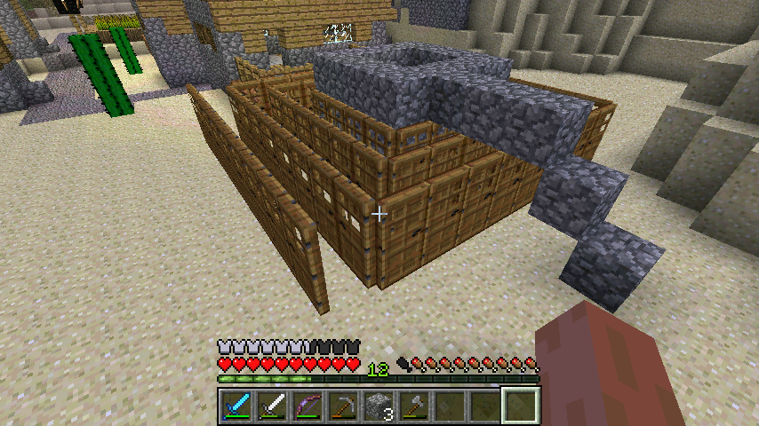
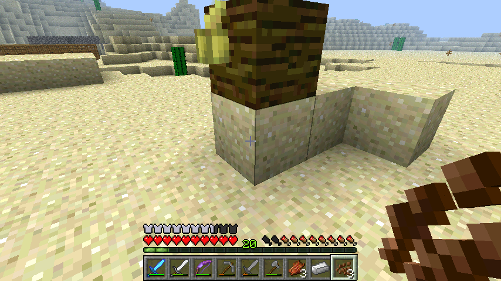
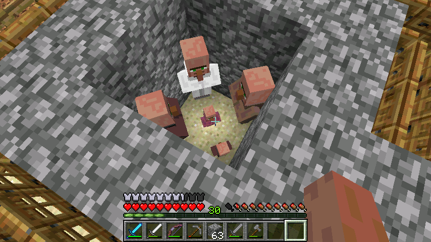

首页
上一页
16
17
18
19
20
21
21
22
23
24
25
26
下一页
末页
defanive2
无尽黑夜
14
这种树的砍伐方式
先顺着蔓藤爬到顶端，然后站在2x2的正中间，然后顺时针一直往下砍就可以了
周围的分支也要清理，这样就可以让树叶消失，至少得回4个树苗，进行下一轮
959楼
2012-08-13 17:17
defanive2
无尽黑夜
14
收获许多，一共106个原木
960楼
2012-08-13 17:17
defanive2
无尽黑夜
14
又生了一个小村民，结果是butcher
我擦，不满之下锋利4干掉了两个村民 = =
PS 村民的繁殖是根据周围房子的数目，而房子则是符合条件的木门
成人村民数量=周围房子数目/3，他们就根据这个进行繁殖
因此2种方法可以被采用，杀成人村民，或者加门
965楼
2012-08-13 17:20
defanive2
无尽黑夜
14
渲染又有问题了，不过可以看到又进入了XXOO状态
966楼
2012-08-13 17:21
defanive2
无尽黑夜
14
最后生了一个blacksmith
长大之后可以跟他用绿宝石换铁装，钻石装
很不错，不过我想要的是priest
967楼
2012-08-13 17:22
defanive2
无尽黑夜
14

已经加了一大圈的门了。。。
968楼
2012-08-13 17:26
defanive2
无尽黑夜
14
好了我来回复一下大家
970楼
2012-08-13 17:27
defanive2
无尽黑夜
14
回复完大家的评论，去看了一下，blacksmith已经长大了
交易项目果然很给力，12个绿宝石->1个钻石剑
虽然钻石储备还有一组，不过这个比挖钻石要来得简单多了。。
976楼
2012-08-13 17:51
defanive2
无尽黑夜
14
这个渲染错误也还真是寂寞。。
977楼
2012-08-13 17:52
defanive2
无尽黑夜
14
又生了一个，不过是个farmer
978楼
2012-08-13 17:53
defanive2
无尽黑夜
14
这个也是1.3的新东西，木头可以横着放了
建筑党的福音
979楼
2012-08-13 17:53
defanive2
无尽黑夜
14
寂寞了，种上可可豆。。
980楼
2012-08-13 17:54
defanive2
无尽黑夜
14
生长了一级
981楼
2012-08-13 17:55
defanive2
无尽黑夜
14
2个村民都长大了，一个是butcher另外一个是farmer，看看都给什么东西
1004楼
2012-08-13 18:14
defanive2
无尽黑夜
14
3个人都出爱心，难道要3P？！
我不打扰了。。。
1005楼
2012-08-13 18:15
defanive2
无尽黑夜
14

可可豆熟了，第一幅图可以看到可可豆的3个种植状态
打破完全成熟的可可得到3个可可豆
1006楼
2012-08-13 18:16
defanive2
无尽黑夜
14
话说刚刚刷了一会僵尸刷怪塔，得了一个铁头盔
刚好旧的也坏了，换新的，等级也到LV21了
1007楼
2012-08-13 18:18
defanive2
无尽黑夜
14
回去看了一下，3P的成果是一个librarian
看起来甘蔗换绿宝石的时代又回来了
1009楼
2012-08-13 18:22
defanive2
无尽黑夜
14
话说那个farmer的交易项目是16个羊毛->1个绿宝石，貌似还挺值的
不过换绿宝石我还是跟librarian用纸来换吧，甘蔗场产量比羊场高多了
1010楼
2012-08-13 18:24
defanive2
无尽黑夜
14
我觉得可可豆可种植之后，已经可以列为可浪费资源一类了。。
这个种植速度实在太坑爹了。。
1011楼
2012-08-13 18:28
defanive2
无尽黑夜
14
无聊开始种蘑菇了，就像以前一样种一个蘑菇然后骨粉
不过不同的是，1.3开始对种下去的时候进行条件判断了，也就是种下去的地方亮度要低于12（貌似是？忘了）
1014楼
2012-08-13 19:26
defanive2
无尽黑夜
14
获得19个蘑菇。。
1015楼
2012-08-13 19:27
defanive2
无尽黑夜
14
换了一个钻石剑来附魔
交易项目结果变成了22个煤->1个绿宝石。。。
1016楼
2012-08-13 19:28
defanive2
无尽黑夜
14

最后他们终于生了一个priest！
可以换eye of ender去了
1020楼
2012-08-13 19:36
defanive2
无尽黑夜
14
近距离围观
1022楼
2012-08-13 19:38
defanive2
无尽黑夜
14
附魔得到了lootingII！
于是刷小黑也可以刷够eye of ender了
不过一般在1.3以前，要么就不出looting，要出就出lootingIII，基本没见过II的。。
看起来1.3附魔改变了之后变化还真大
1023楼
2012-08-13 19:40
defanive2
无尽黑夜
14
去刷了几只小黑结果都没出东西。。
回来一看，priest已经长大了
1024楼
2012-08-13 19:45
defanive2
无尽黑夜
14
看到交易项目顿时就哭了，要浪费多少东西才能刷到换eye of ender的交易啊。。
1025楼
2012-08-13 19:46
defanive2
无尽黑夜
14
回家拿了16个绿宝石，先用12个换一个钻石剑
1027楼
2012-08-13 20:15
defanive2
无尽黑夜
14
绝对是史上最浪费的交易，特别是对于我这种经验塔有N多个的人来说
1028楼
2012-08-13 20:16
首页
上一页
16
17
18
19
20
21
21
22
23
24
25
26
下一页
末页